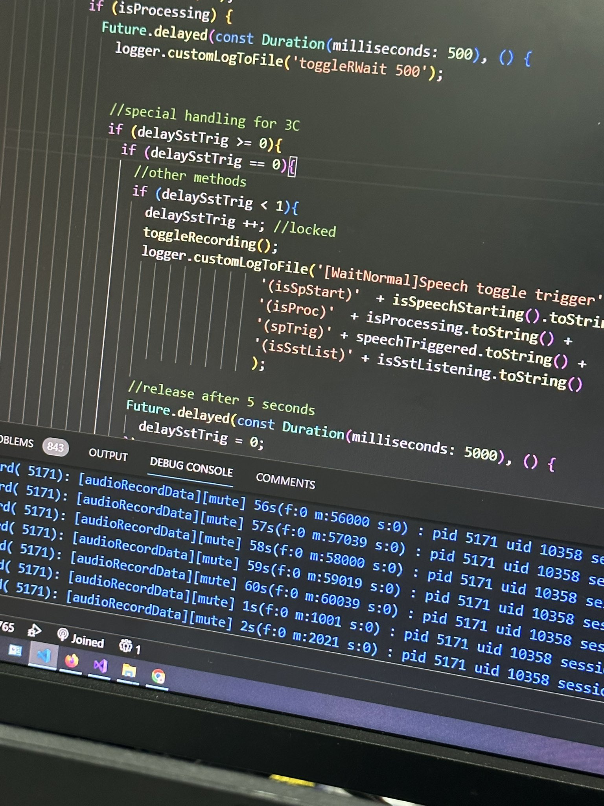

I Have Got To Quit My Job
Recently, work has finally picked up a little bit, as I am given the work of an entire startup - Don’t get me wrong though, I am still very bored, and still spend hours a day having nothing to do. With more responsibilities on the project, I have gotten to experience more parts of being a developer, talking to product owners, writing project estimates, and so on. It’s been an eye-opening experience.
And I don’t like what I see.
First, some background. What this project is about I don’t want to write about here, but basically, I have been tasked with writing a multi-platform app that includes the following:
These are what the project has now, there are more features to come, especially in the backend. Regardless, along with making these, you know, work, I also have to design ALL of the UI, and do most of the QA, since I am essentially the only developer on the project.
While my friends have told me this is completely abnormal for a solo developer and that I should be worried, truthfully I don’t think this is too bad, since the technical difficulty in getting these to work isn’t very high - most things here can be done with libraries and various API calls, and writing UIs in Flutter is a LOT better than writing CSS. The only difficulties has been trying to make the pose detection as performant as possible, which involves dealing with Dart’s isolates - creating entirely new processes instead of writing new threads like you would in a less shitty language, and having to deal with management telling me to my face that the UI is “ugly” when I’m an untrained solo dev with 6 months of experience.
I also didn’t start these from scratch, half of these features were implemented by a previous developer, which I have been told was hired by the top brass for a LOT of money (Far more than me). Surely, the upper echelon of this billion dollar corporation can be trusted to make good technical judgments, and I have nothing to worry about.
Fuck.
This previous dev is the biggest piece-of-shit excuse for a developer I have ever seen in my entire life, the level of incompetence I had to witness in the codebase is truly unbelievable, and I don’t mean something simple like “Oh, this code could’ve been cleaner and the variable naming could’ve been better”, I mean this person is WORSE than a high schooler in terms of programming ability. While spending a MONTH refactoring this steaming pile of shit, I was so bewildered by some of these lines of actual code MEANT FOR PUBLIC RELEASE that I had to take pictures, be warned, these are REAL:
Can you tell me what this is doing? I don’t think you can.
Other than that, this highly-paid professional also:
And that’s JUST the programming issues, some of the files also had… questionable sources:
I’m pretty sure this guy doesn’t speak Spanish, so that means that this app has blatantly stolen code (One of the stolen pages is quite literally the first result on Google). Whether or not this app even can be published legally is beyond me, and is not my problem to deal with. I understand copying and pasting code - I do it often myself, but an ENTIRE feature?
I’m no 10x developer - I have footgunned myself enough times with C++, a leetcode medium is challenging to me, and I too have wrote code on this very project that I look at and say “What the fuck was I doing?”, but come on. This is literally unbelievable, the fact that this grifter was allowed to write all of this and get away with this much money is depressing and makes me question my existence. Anyway, I refactored it, solved most of the coding sins, time to add in new features right?
Not so fast.
The list of features are given to me, sure, but the details on how these features would work? Completely unknown, so as the developer, I either 1. Wait for the product owner to reply back to me, which delays things, or 2. I guess them, and simply throw away a week's worth of code if I happen to guess incorrectly. Both are immensely inefficient, and both cause damage to my soul. The product owner in question is also incompetent, unable to give me the hardware I need to test things on - The app is multiplatform, so where’s my MacBook and iPad? Oh you are telling me the billion-dollar corporation I work at can’t fork out 1500 dollars for development tools? Great! Your project will be delayed at no fault of mine. Sometimes the decisions that they DO make are so obviously bad to the point where I know they will backtrack and change them, meaning even MORE code I write will be wasted.
Speaking of the list of features, I also had to write up a project estimate, where I have to guess how long these features will take, but I have no idea how long things are going to take, since… I HAVEN’T TRIED TO DO THEM. I tell my project manager that I just don’t know how long things will take, and he tells me the same thing he always had when I tell him something isn’t technically feasible:
“I know doki, but you still have to do it.”
What? How? So I just lie? It appears that this is the case, and what really matters is that there’s a date that management can look at, whether or not I am able to stay on the schedule is irrelevant. So, I lie and say it takes 2 weeks to get the app working on iOS when it may take 2 days if things work, or a month if everything breaks (UPDATE: I overestimated quite a bit of things and now I am about 3 weeks “ahead” of schedule, but no one has noticed.).
Well, I still have to do stuff at work, so I’ll just guess how these features are gonna work and implement them… and I am blocked. I am only in charge of the app on this project, and my coworker works on the backend, however, he is very slow, and took days to set up the server so I can send a simple POST request or open up a new table in the database. I do not blame him, he’s a nice guy and it would be unfair to assume that everyone works at the same pace, but It’s not particularly fun having to wait for the backend to get set up and I look over and he’s on his phone with a basic tutorial on his screen, but hey, I’m no better with discord literally on my laptop and writing these blogs at work, so whatever.
So, what the fuck is going on in software development? This entire process has been as dysfunctional as possible, no one knows what’s going on, no one has even remotely a vision for the project, and there is ZERO communication, there is no way this is how the industry works. I was notified that the tablet running my development build will be taken away for a LIVE DEMO on the MORNING OF THE DEMO. Therefore, unsurprisingly, since nothing was ever clarified, they managed to come up with an entirely new user flow on the spot, and the app broke because… we didn’t test for that.
Well, unlucky, this is what happens when you hire 1 person to do QA, UI and write unchecked code instead of having an actual team. If you want to take the risk of getting a fresh graduate to do 3 jobs, let’s roll the fucking dice.
Did I mention I make 2500 dollars a month working 45 hour weeks?
Written 15.02.2024